전체 높이
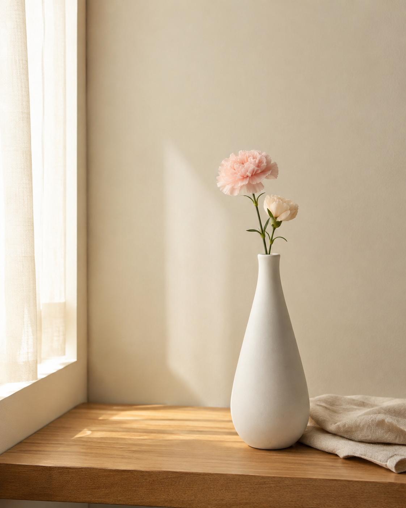
OTOKKI CERAMIC VASE
한 송이만으로도,
공간은 조금 다정해져요.
길게 이어지는 부드러운 곡선과 따뜻한 화이트.
매일 보는 자리에 작은 생기를 놓아보세요.
A QUIET CURVE
꽃이 없어도,
조용히 예쁜 곡선
아래의 통통한 볼륨부터 길게 이어지는 목까지.
단정한 화이트 실루엣이 평범한 공간에
차분한 포인트를 더해요.
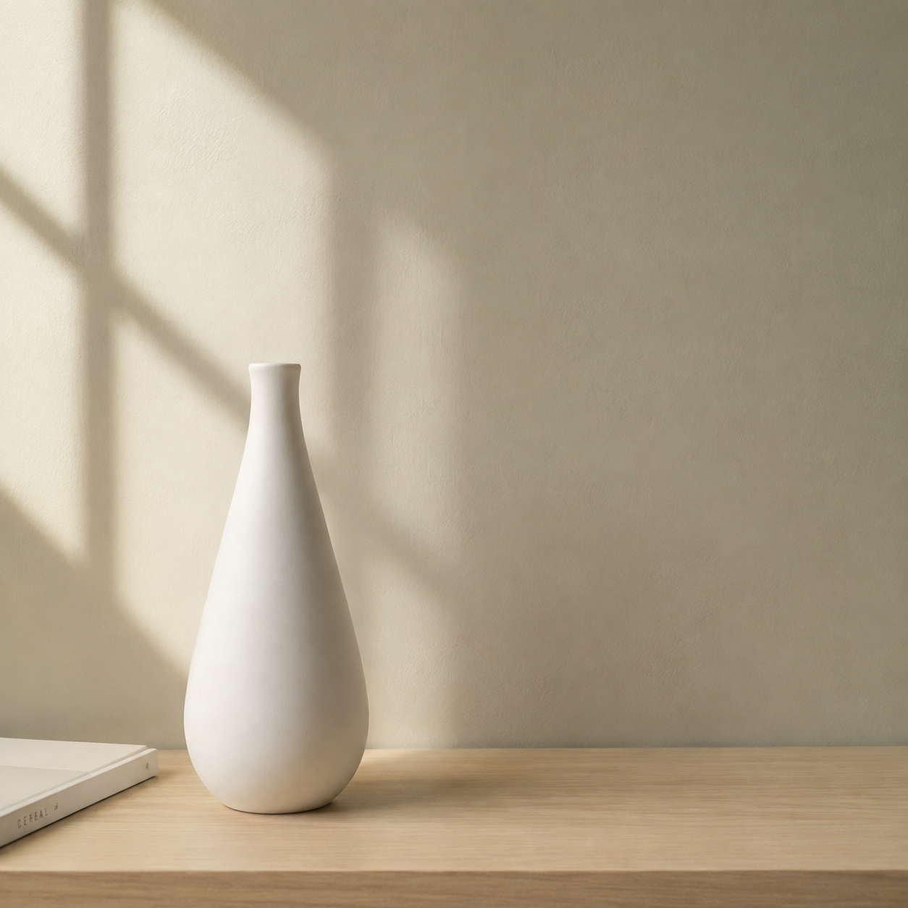
SLIM MOUTH
좁아서 더 단정하게
외경 약 2.5cm의 슬림한 입구가
적은 수의 꽃줄기도 한곳에 모아주어,
한두 송이만으로도 단정한 연출을 도와줍니다.
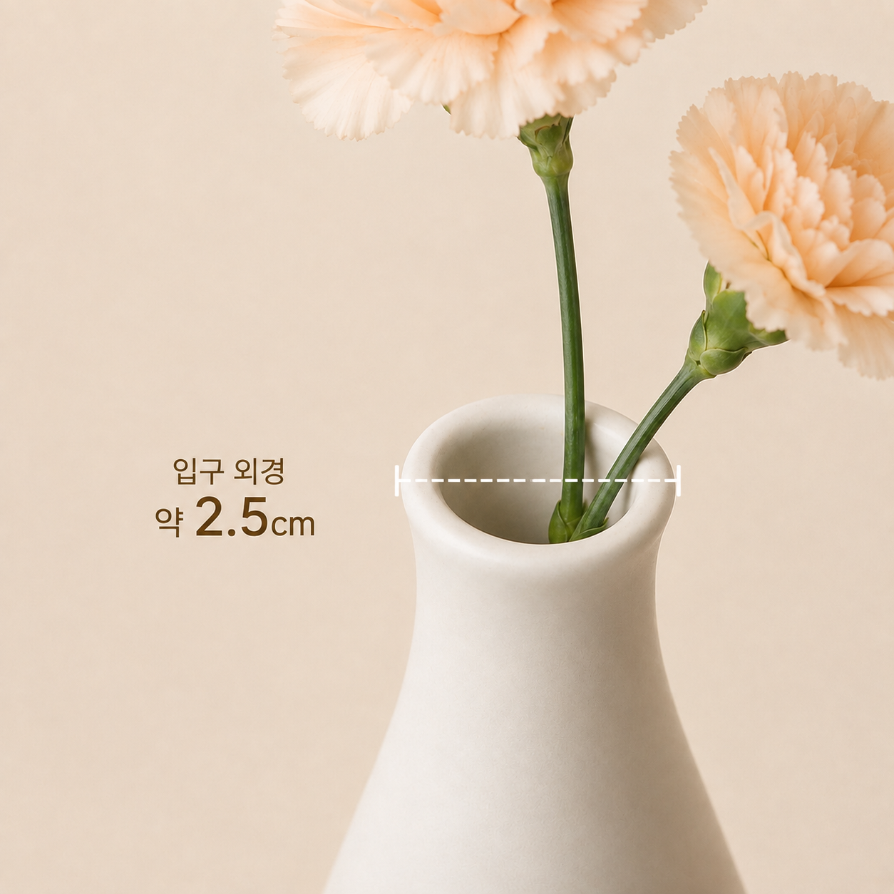
SOFT SILHOUETTE
길고 부드럽게,
공간에 부담 없이
최대 폭
입구 외경
측정 위치와 방식에 따라 미세한 차이가 있을 수 있습니다.
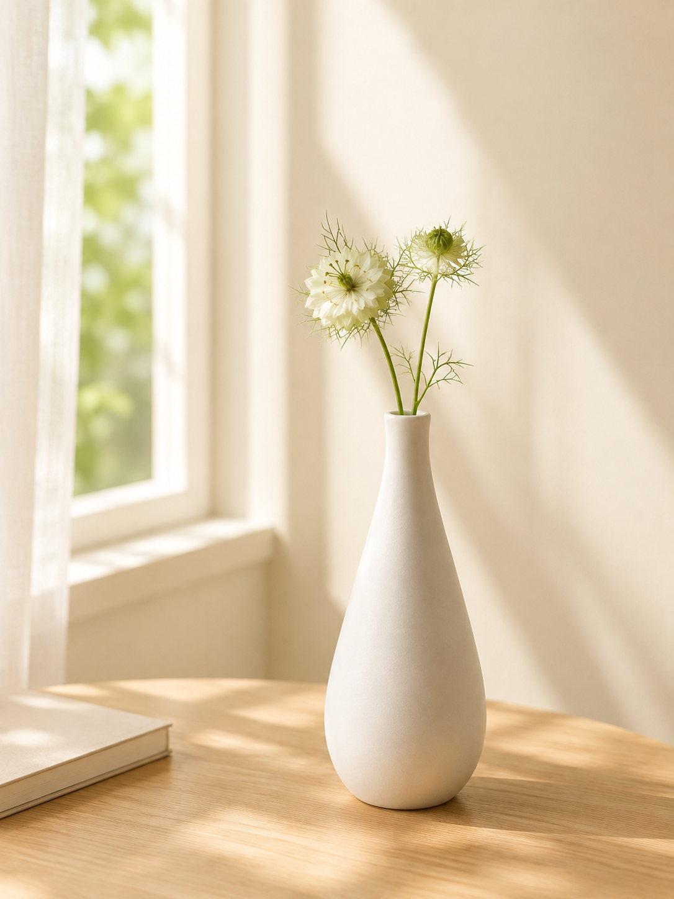
꽃 한두 송이만으로도
매일 보는 테이블의 분위기가
부드럽게 달라져요.
COZY ROOM
작은 자리에도
자연스럽게
협탁과 선반, 매일 눈길이 머무는 곳에 가볍게 놓아보세요.
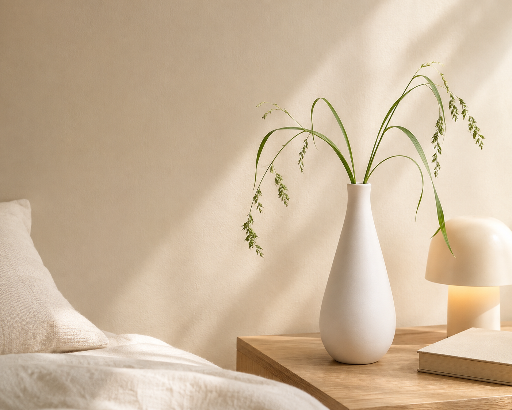
TWO WAYS
오늘의 기분만큼
가볍게
한 송이도, 몇 송이도.
슬림한 입구가 꽃의 선을 단정하게 모아줘요.
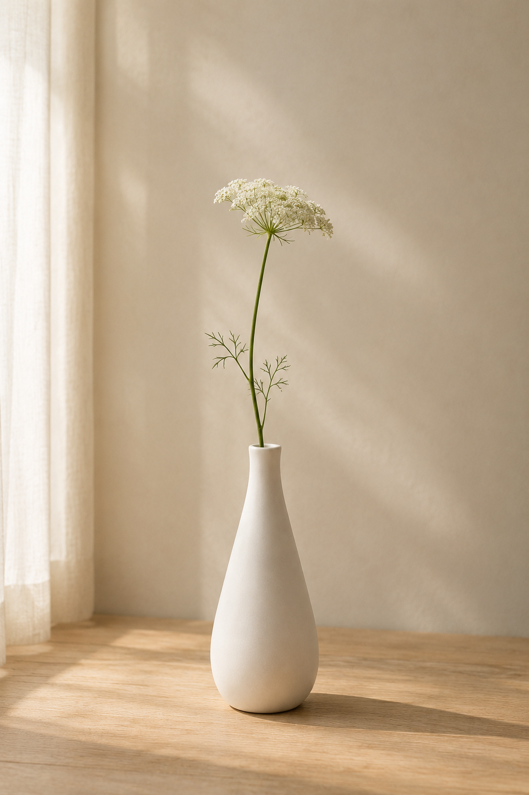
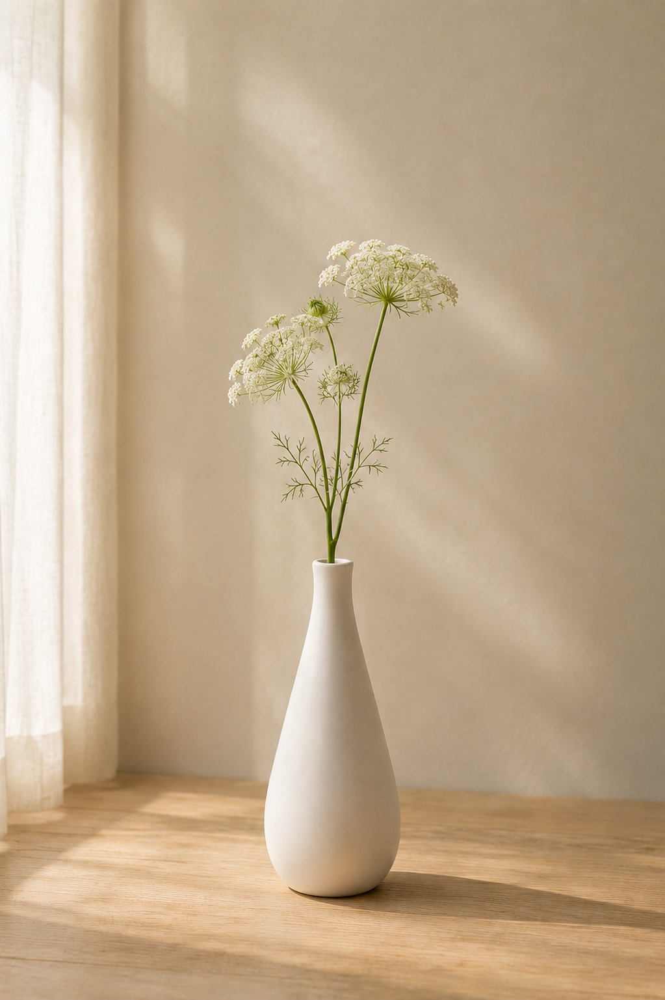
ACTUAL DETAIL
가까이 볼수록
담백하게
장식은 덜어내고,
실제 도자기의 형태와 표면을 그대로 담았습니다.
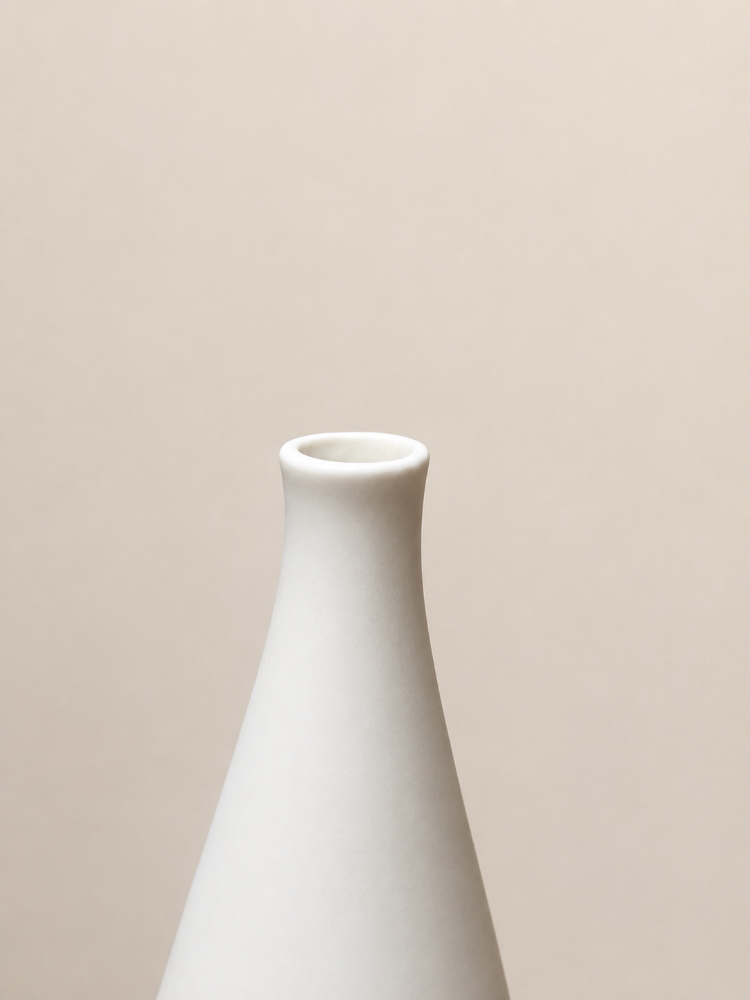
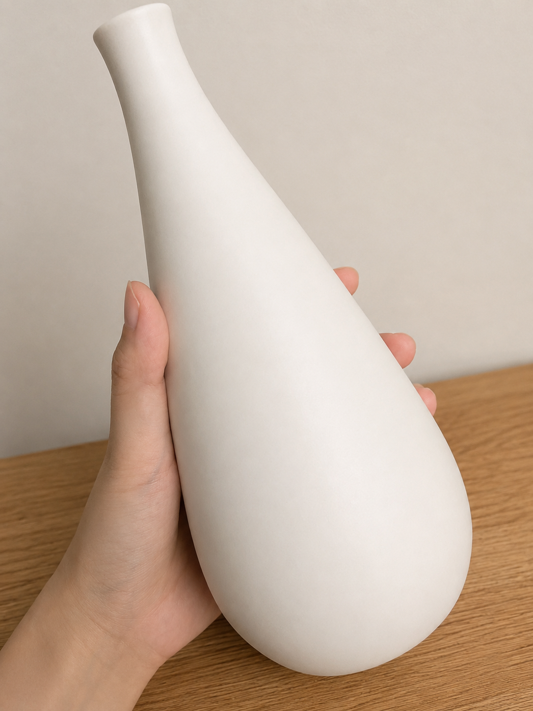
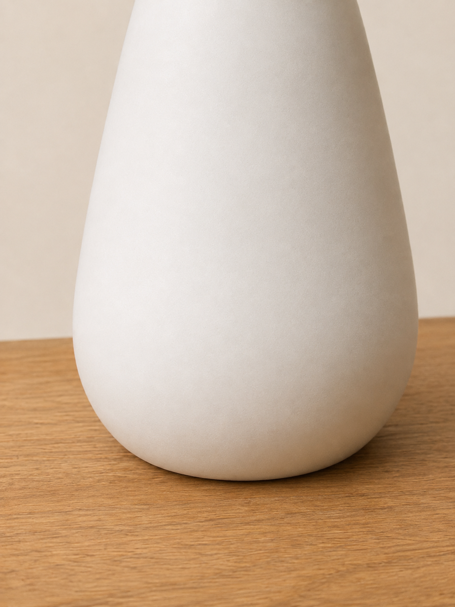
SIZE GUIDE
놓을 자리를 위한
실제 크기
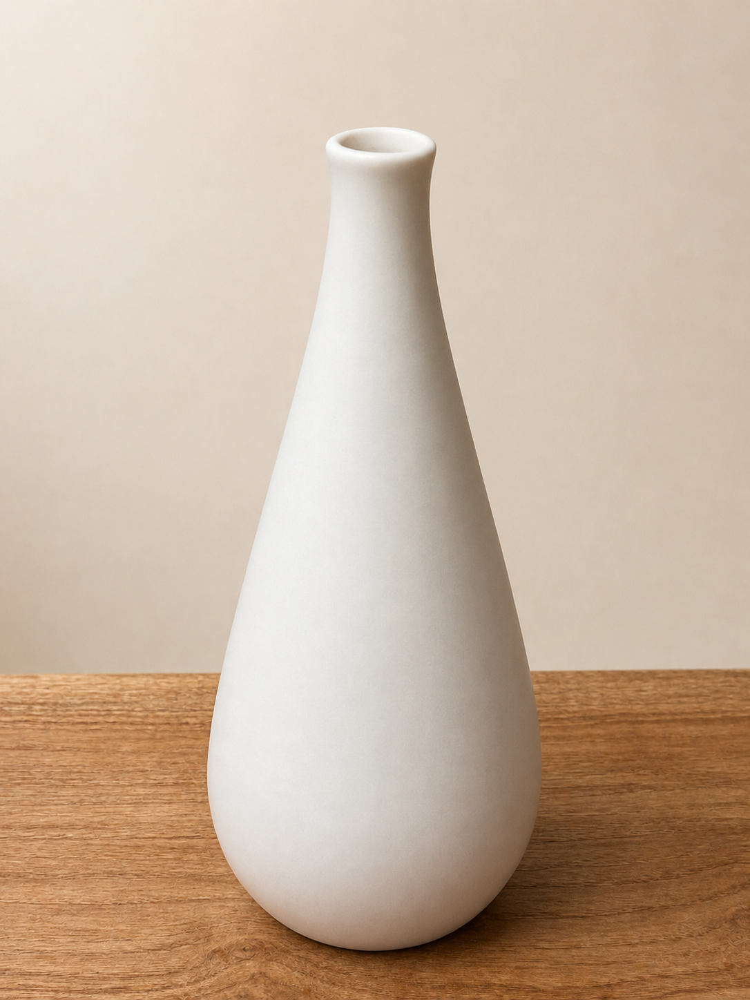
21.5cm
약 8.5cm
HEIGHT21.5cm
MAX WIDTH약 8.5cm
BASE6cm
MOUTH OUTER약 2.5cm
PRODUCT INFORMATION
상품정보
- 상품명
- 오토끼 도자기 화병 인테리어 감성 소품, 화이트
- 구성
- 화병 1개
꽃 및 촬영용 소품 미포함 - 색상
- 화이트
- 재질
- 세라믹(도자기)
- 크기
- 높이 21.5cm / 최대 폭 약 8.5cm
바닥면 지름 6cm / 입구 외경 약 2.5cm - 사용
- 물 사용 가능 / 생화 사용 가능
- 제조국
- 중국
- 수입자
- 오토끼